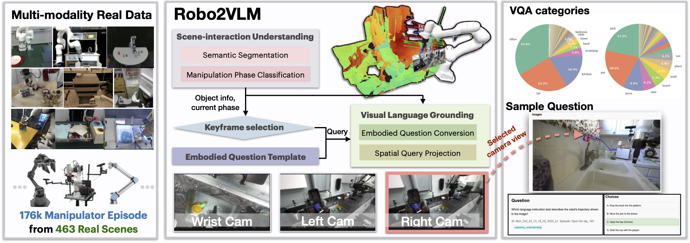
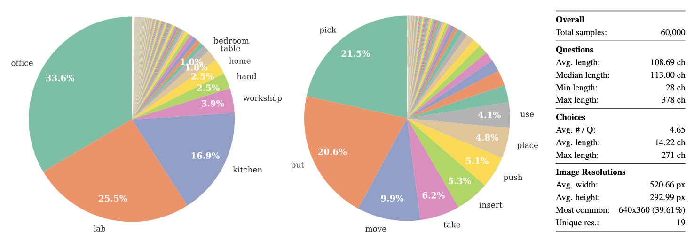
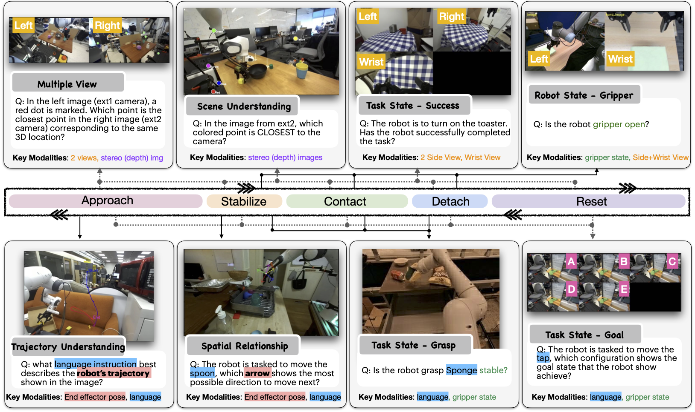
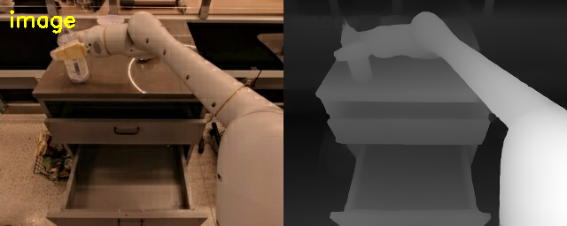
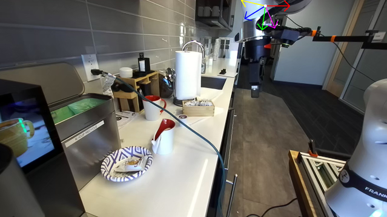
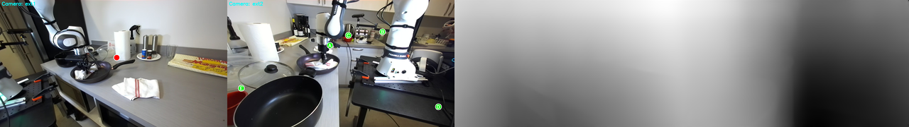

Questions are curated into spatial reasoning, affordance understanding, or neither, then deterministically subcategorized for focused evaluation.


spatial: distance
spatial: direction
affordance: blockage
affordance: grasp
Older Qwen and spatial DeepSeek rows store tag: unknown, so spatial subcategory breakdowns are inferred from question text.
Eight 200-example runs compare Qwen2.5-VL-3B and DeepSeek-VL2 tiny across spatial vs affordance subsets and zero-shot vs chain-of-thought prompts.
72.0%best single runDeepSeek affordance zero-shot
22.0%best spatial runDeepSeek spatial CoT
1,600scored examples8 evaluation runs
zero-shotCoT
3
Concrete Dataset Samples
Examples show the visual question formats behind the aggregate metrics: multi-view correspondence, depth/point questions, robot motion arrows, and affordance probes.

Robo2VLM-style VQA examples across multiple manipulation phases and modalities.

source_index 0: bottle blockage. DeepSeek zero-shot predicts A correctly; DeepSeek CoT predicts D incorrectly.

source_index 368: direction-arrow question. Qwen CoT predicts A correctly; Qwen zero-shot predicts E.

source_index 408: cross-view correspondence. CoT predicts E correctly; zero-shot predicts B.
Best observed accuracy per subcategory shows that object blockage is much easier than spatial grounding or grasp stability.
- Affordance scores are mostly carried by object-blockage questions.
- Grasp stability remains weak: best run is DeepSeek zero-shot at 32/68.
- DeepSeek CoT collapses on object blockage: 84.8% zero-shot to 13.6% CoT.
Image-understanding probes test correct-answer support, wrong-answer rejection, blank-image rejection, and shuffled-image mismatch detection over 20 selected examples.
Correct answer supported
Qwen 12/20
DeepSeek 0/20
Wrong answer rejected
Qwen 0/20
DeepSeek 3/20
Blank image rejected
Qwen 20/20
DeepSeek 20/20
Shuffled image rejected
Qwen 3/20
DeepSeek 20/20
The heuristic labels are phrase-based triage, not a substitute for manual review. They expose answer rationalization and weak visual grounding that headline accuracy hides.
These results should be interpreted as a controlled benchmark readout rather than a comprehensive ranking of general robotic reasoning ability.
- Spatial scores near 5-way chance indicate limited evidence that the tested VLMs reliably use depth, camera geometry, and end-effector cues under the current prompting setup.
- Affordance accuracy is heterogeneous: object-blockage questions are comparatively tractable, while grasp-stability questions remain weak. Aggregate affordance accuracy should therefore not be read as a general affordance-understanding score.
- CoT changes model behavior but is not consistently beneficial. The DeepSeek affordance regression suggests that explanatory prompting can introduce target/obstacle confusions and post-hoc rationalization.
- The sanity probes are diagnostic, not definitive: phrase-based judgments reveal failure modes, but final grounding claims require manual annotation or a stronger rubric.
Limitations and follow-up:
Current scored runs use 200 examples per condition, RGB-only images, two fully evaluated checkpoints, and inferred subcategory labels for older artifacts.
Next steps are to regenerate all rows with stored curation metadata, run subcategory-specific evaluations on matched indices, add human-coded sanity review, and test RGB-depth input on spatial distance/depth examples.
Qualitative cases to audit: source 0 for DeepSeek CoT prompt regression, source 368 for direction-arrow contrast, source 408 for cross-view correspondence, and sanity source 369 for Qwen wrong-answer rationalization.